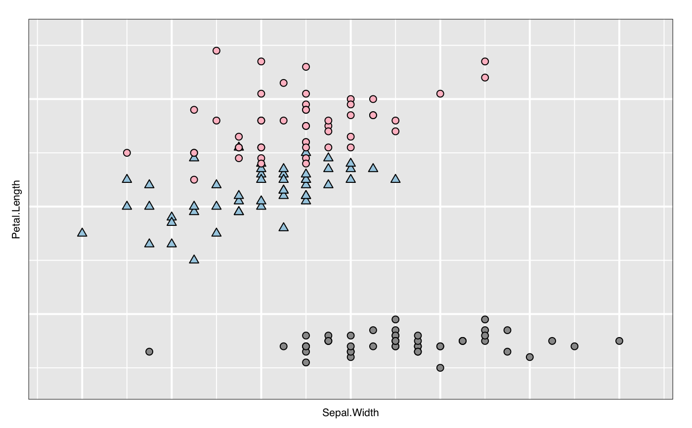

Create an interactive loon plot widget
l_plot.Rdl_plot is a generic function for creating interactive
visualization environments for R objects.
l_plot(x, y, ...)
Arguments
| x | the coordinates of points in the l_plot. Alternatively, a single plotting structure, function, or any R object having an l_plot method can be provided. |
|---|---|
| y | the y coordinates of points in the l_plot, optional if x is an appropriate structure. |
| ... | named arguments to modify plot states. See |
Value
widget handle
Details
Like plot in R, l_plot is
the generic plotting function for objects in loon.
The default method l_plot.default produces the interactive
scatterplot in loon.
This is the workhorse of `loon` and is often a key part of many
other displays (e.g. l_pairs and l_navgraph).
For example, the methods include l_plot.default (the basic interactive scatterplot),
l_plot.density (layers output of density in an empty scatterplot),
l_plot.map (layers a map in an empty scatterplot), and
l_plot.stl (a compound display of the output of stl).
A complete list is had from methods(l_plot).
vignette(topic = "introduction", package = "loon")
and to explore loon's website accessible via l_help(). The general direct manipulation and interaction gestures are
outlined in the following figures.
Zooming and Panning
 Selecting Points/Objects
Selecting Points/Objects
 Moving Points on the Scatterplot Display
Moving Points on the Scatterplot Display

See also
l_plot.default. All arguments to any l_plot
can be seen from the state names of any instance via
l_info_states or names.loon.
Other two-dimensional plotting functions: l_plot.decomposed.ts,
l_plot.default,
l_plot.density, l_plot.stl
Examples
# ordinary use p <- with(iris, l_plot(Sepal.Width, Petal.Length, color=Species)) versi <- iris$Species == "versicolor" p["glyph"][versi] <- "ctriangle" # Get an R (grid) graphics plot of the current loon plot plot(p)# or to save the grid data structure (grob) for later use pg <- loonGrob(p) # plot a density estimate set.seed(314159) ds <- density(rnorm(1000)) p <- l_plot(ds, title = "density estimate", xlabel = "x", ylabel = "density", showScales = TRUE) plot(p)